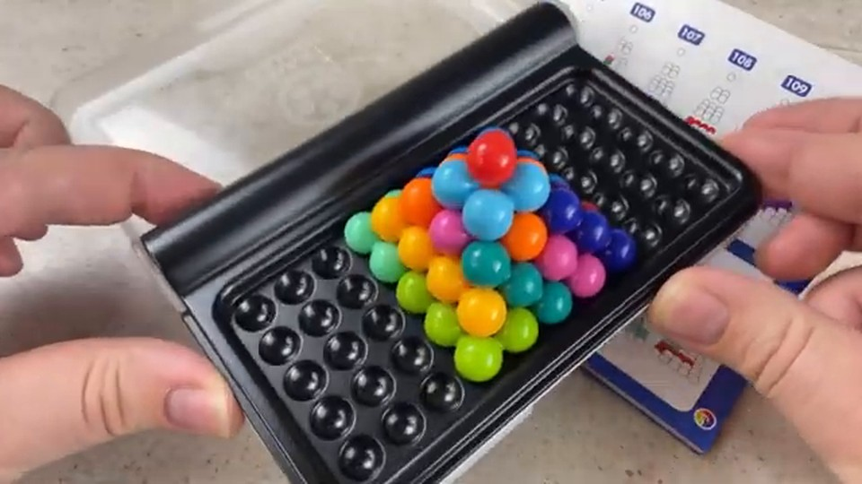
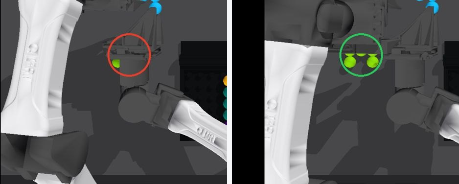

Cyan release · make the bead visible

65 mm11/13
75 mm13/13
80 mm13/13

RoboSimStudio workcell · Graph-as-Policy controller · inputs: four RGB cameras, joint encoders, part CAD.



t = 0.0 s
passed checkpointrunningerror exit → abort↻ bounded re-look inside the nodeClick a node or a colour bar to jump.



One fresh all-loose episode per row. The policy never receives these settings; it re-measures every pose from RGB. Jittered starts are rejection-sampled so no loose pieces overlap. {{GEN_NOTE}}